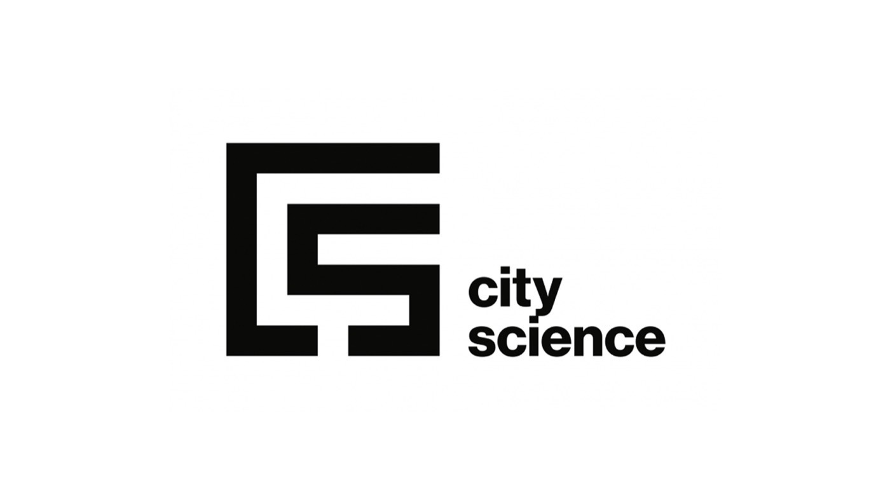

Back to all projects
Ruyi Yang
Urban · 2024
SoCity DAO - GreenCommute
Incentive system for green commuting, 100-person pilot

Role
Researcher / developer
Affiliation / Context
MIT Media Lab, City Science Group
Year
2024
Scale
big
Urban
Research
ML
Software
View full case study ↗
Back to all projects